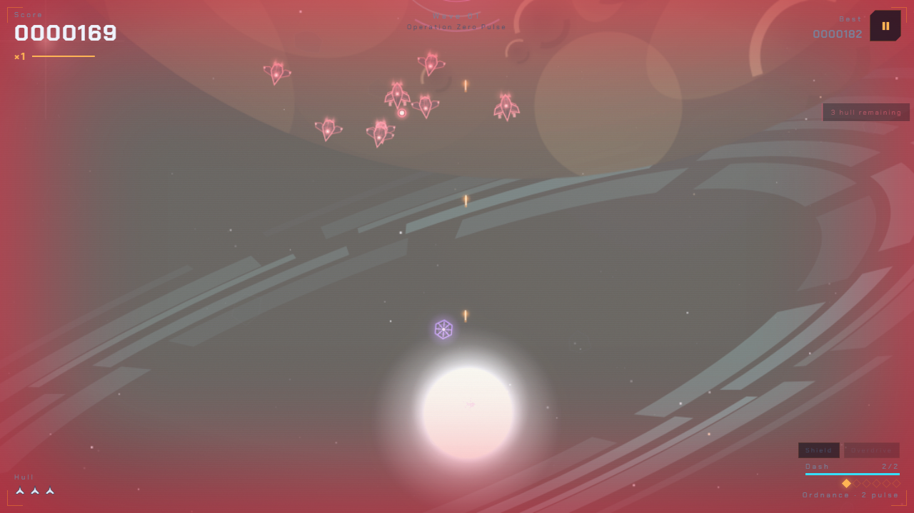
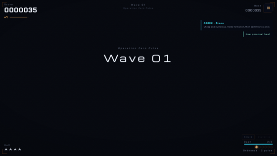

Something came through the Kuiper Gate and hasn't stopped since. You're the last ship between it and the orbital yard. Click Launch. That's the whole tutorial.

The game's CI plays it. On every push an autopilot bot flies it with real touch inputs. It reaches wave 3, grazes bullets and chains combos, and nothing ships unless that run passes. A test also covers a new player's first minute: ready in under 3.5 seconds, first shot within 2, enemy fire by about 6. Every number on this page comes from a test.

Every release, the autopilot bot flies a 56-second headless mission in CI and the numbers land on this table: how deep it flies, what it kills, how smoothly the game runs. A depth probe, not a feat claim — but the only feature list on this page that flew the game before you.
| Release | Date | Wave | Kills | Grazes | Combo | Median fps |
|---|---|---|---|---|---|---|
| v4.28.0 “Guest Pass” | 2026-10-23 | 2 | 25 | 4 | ×3 | 34 fps |
| v4.27.0 “The Same Ladder” | 2026-10-19 | 2 | 23 | 1 | ×2 | 29 fps |
| v4.26.0 “The Open Gate” | 2026-09-30 | 2 | 20 | 3 | ×3 | 30 fps |
| v4.25.0 “The Listening Deck” | 2026-09-28 | 3 | 28 | 5 | ×2 | 47 fps |
| v4.24.0 “Signal” | 2026-09-28 | 2 | 15 | 1 | ×2 | 27 fps |
| v4.23.1 “The Fence” | 2026-09-28 | 2 | 17 | 2 | ×2 | 46 fps |
| v4.23.0 “Glasscockpit” | 2026-09-27 | 2 | 19 | 2 | ×2 | 27 fps |
| v4.22.2 “Open Surfaces” | 2026-09-27 | 2 | 20 | 6 | ×2 | 35 fps |
| v4.22.1 “The Recruiting Page” | 2026-09-27 | 3 | 27 | 4 | ×3 | 33 fps |
| v4.22.0 “The World Stage” | 2026-09-27 | 2 | 22 | 6 | ×2 | 27 fps |
| v4.21.2 “Always Reachable” | 2026-09-26 | 2 | 28 | 3 | ×3 | 25 fps |
| v4.21.1 “The Curve” | 2026-09-26 | 3 | 29 | 2 | ×2 | 39 fps |
| v4.21.0 “Proof of Play” | 2026-09-26 | 3 | 28 | 4 | ×2 | 46 fps |
| v4.20.0 “First Contact” | 2026-09-26 | 2 | 17 | 4 | ×2 | 24 fps |
Raw data: fun-curve.json — one committed row per release, written by the run that flew it.
No long survey. Play it, then tell me four things:
Answer the four questions as an issue →
Free · no install · no ads · no third-party trackers · MIT source